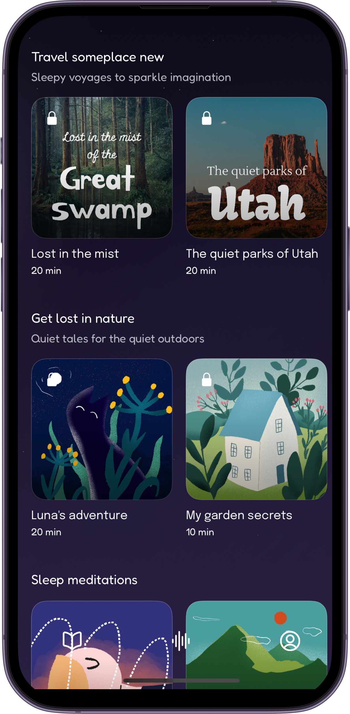
Role: Solo designer, developer and content creator
Platform: iOS mobile app
Tools: Xcode, Procreate, ElevenLabs, RevenueCat, Firebase Analytics
Problem: Many people struggle to switch off their thoughts at bedtime. I wanted to see whether calm, story-driven audio could help people wind down.
Approach: I hypothesised that people need 3–4 sessions to feel the value, so I launched with a library of 10 audio stories, hand-drawn artwork and a 7-day free trial at 2.99/month. I then tested a sound mixer, a dream journal and several acquisition channels, guided by usage data.
Results:
I used to struggle falling asleep (and still do sometimes), and tried various ways to help myself, until one evening I had a realisation that listening to podcasts before bed really put me at ease. Maybe it was the break from screens, or simply giving my mind something else to follow, but I kept doing it until I stumbled upon Alan Watts' podcast – a series of lectures recorded in the 70s, with crackling sound, abstract topics, good storytelling. Fast-forward several years and I'm happily writing my own sleep-podcast script.
Sleep audio is a proven category. Apps like Headspace and BetterSleep already serve it well, with large content libraries and polished sound tools. I researched how users talk about their struggles and what tools they use on Reddit, looking for keywords “sleep tale”, “sleep story”, “sleep meditation” among others. Some takeaways were that users do indeed find it valuable, integrating stories into their whole bedtime routine and appreciating hearing the same voice across stories.
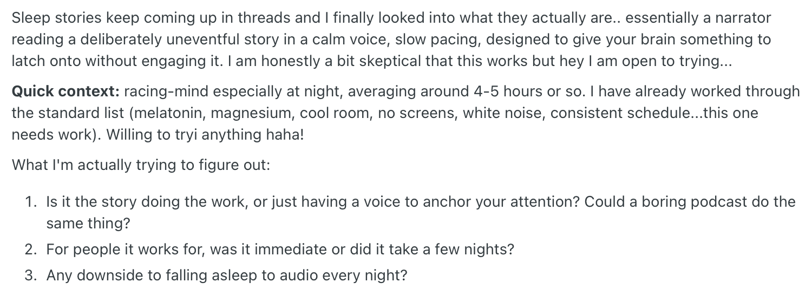
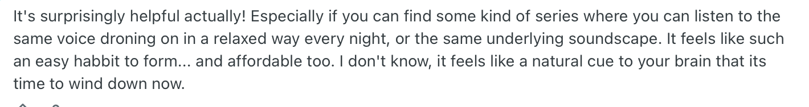
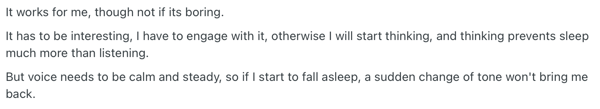
This led me to think that strong audio content with a soothing, high-quality voice was worth pursuing first.
I designed the app with a hypothesis that users who would spend more time in-app, listening to a podcast, or a sleep-sound would get to the aha moment (better sleep) faster. I assumed that it would be unlikely for someone to get there during the first-time use. I estimated 3–4 uses to learn the main value prop (diverting invasive thoughts) and become an activated user.
So, one of the metrics I set out to track was the session length as well as user activity over time and retention.
The initial app version was a simple flow: the user lands on a welcome screen, sees a paywall, then lands in the audio library.
To work with my assumption of 3–4 days of repeated use, I had to have enough content for users to engage with. So I created a list of 10 audio stories to start with – some of them free, and the rest accessible via subscription.
The idea behind the content was to create an immersive soundscape with a narrative that takes the listener somewhere else, quiets racing thoughts and builds a calmer mindset. I wrote the script outline myself, and used AI to fill in the gaps, then refine.
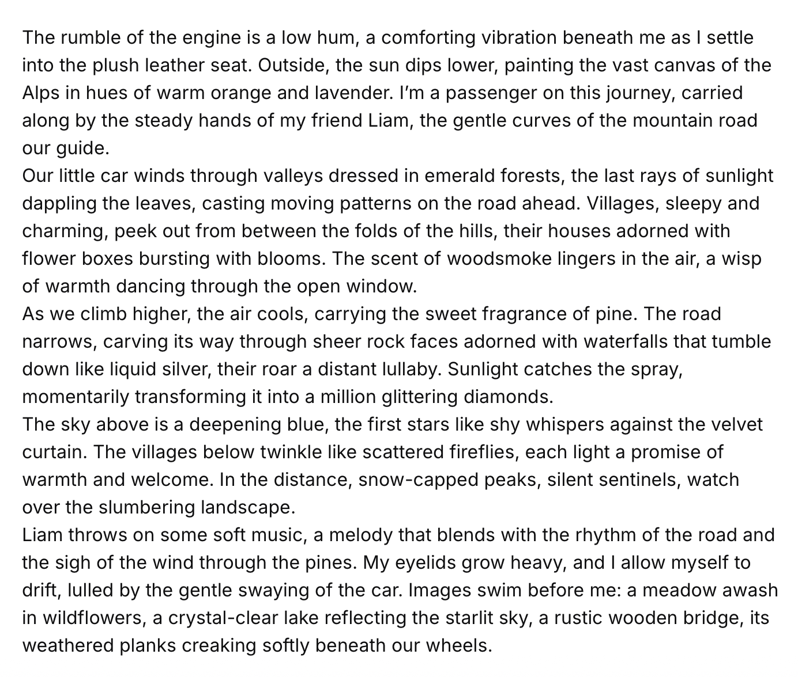
Once I'm happy with the script, I paste it into ElevenLabs and generate with a soothing voice. Finally, I trim the audio recording for a more natural flow, adding pauses and silences where needed.
For the audio cover I wanted to create something human and authentic – since I already used plenty of AI until this point. So I drew all the illustrations myself on Procreate, including the app icon.
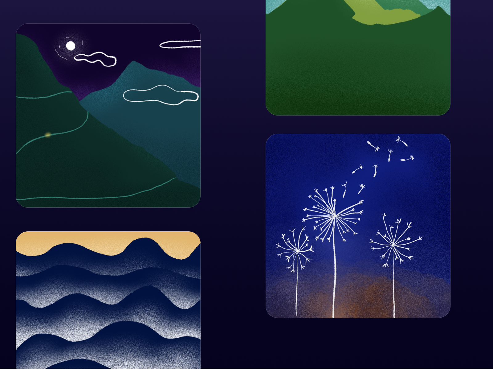
As for the paywall, I went with only a single monthly plan initially, to test the price sensitivity and willingness to pay. I used RevenueCat for an easy integration.
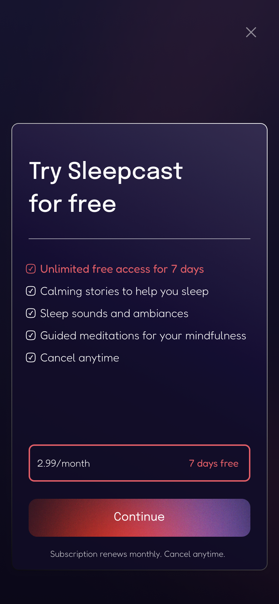
The initial data was pointing towards the brief usage of the content, with most users churning on day 1.
They discovered the content, understood how to use it, but engagement wasn't really there. In subsequent iterations I kept adding more audio stories to increase the library, as well as started working on a new feature where users could create and mix their own ambiance by selecting from various sounds, such as rain, ocean waves, old wall clock. My assumption was that this would cater to those users who don’t always want to listen to someone speaking, but still want a soothing sound in the background.
The App Store will push the app higher in discoverability upon its first launch, however, it’ll soon slide down the list and fewer users will notice it outright. This was another challenge I had to tackle in parallel. I decided to try paid ads on the app store, as well as promoting my app on Reddit, but since it costs me money, I needed to stop relying on this soon.
The paid ads were a reliable source of traffic, which I needed to validate my assumptions. But using Reddit was trickier, since self-promoted content quickly gets downvoted. So I used a bot that looks for specific key words on posts, such as “sleep tale”, “sleep meditation” and send those posts to my inbox. Then I would reply to those posts, in a natural and topical manner, driving free traffic.
Another small experiment I decided to add was an option to share a sleep affirmation as an image. This would capture a screenshot of the affirmation, add the app logo, and let users share it natively via social media.
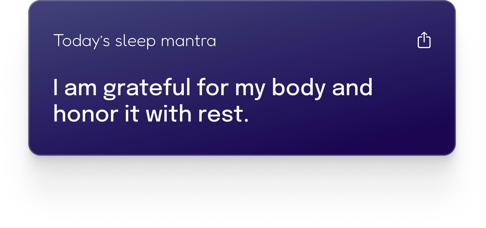
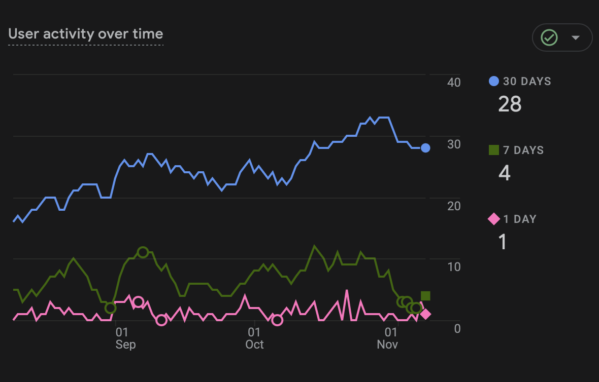
Together, these experiments aimed to grow the active user base enough to run meaningful tests.
To further increase engagement in the next releases I bundled a few updates. First, I added the ambient sound mixer with both free and premium sounds. The use case is when a user wants to set something in a loop, or as a background for 30 minutes.
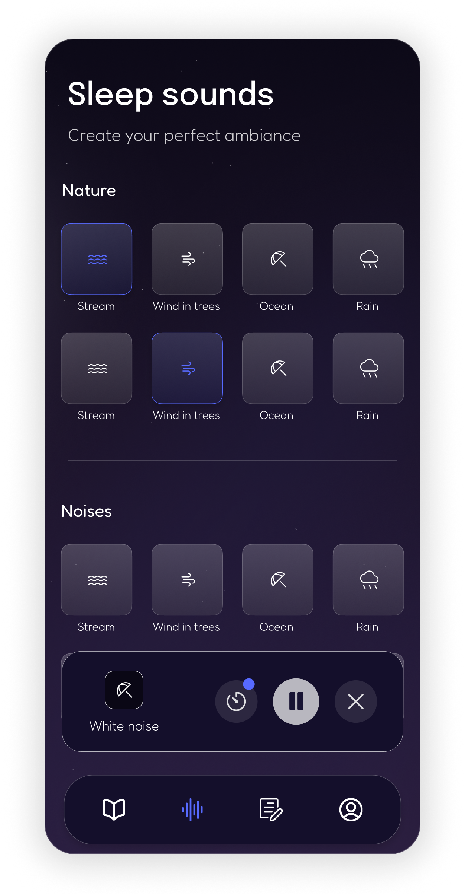
Initial data pointed towards interest in this feature (event: sound_opened).
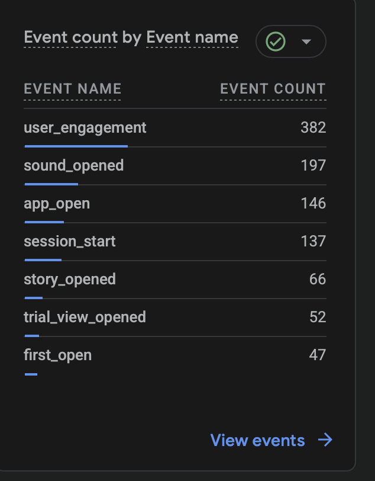
People open sounds about three times as often as stories.
Next, I added a dream journal, a simple notebook where users can enter details of their dreams. A fairly bare-bones feature, but I wanted to see whether there are any signs of interest in journaling, with an idea of turning it into a part of the user journey where one enters own dreams after waking up.
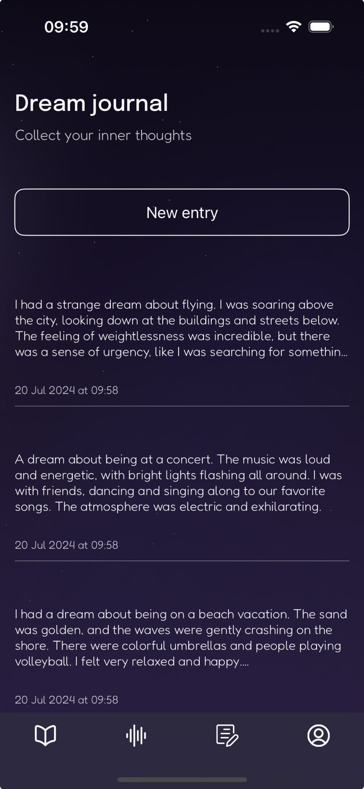
One takeaway for now is that adding more content is a must for continued engagement, so one challenge for me would be to find a way to introduce more sleep tales and sounds, and build my app store profile around them. With added content (sleep stories and sounds in the mixer) in the second iteration average engagement time doubled, from 50 seconds to 1 min 40 s. The initial research on Reddit hinted towards this as the main value gain for the users.
The trial-to-paid conversion rate sits at about 25% at the moment, but the churn once again points to content depth as the main lever.
Additional features help somewhat, but more data is needed to see which ones have good adoption, and which ones don’t. The dream journal feature gathered only a handful of users, so it might not be adding much value as it is. The core experience of the app still is unwinding to relaxing sounds, or a story.
I would like to reach out to some of my users and interview them, to get actual feedback of the app as it is, and uncover additional wants and needs they might have.
I do have more ideas for next iterations, built around the theme of story. For example, users might hear a customised alarm sound in the morning, based on the sleep sound, or story they listened to.
I would like to experiment with a human narrator as well, to see whether that makes any difference. When it comes to visual language though, I will continue drawing illustrations by hand, as it differentiates the app from others relying on AI images.
In user acquisition, I have to keep exploring paid channels besides app store ads, such as Meta ads and YouTube ads, and find the cheapest CPA, while continuously building a loop around user word of mouth (shared affirmations, shared plans, invites etc.).